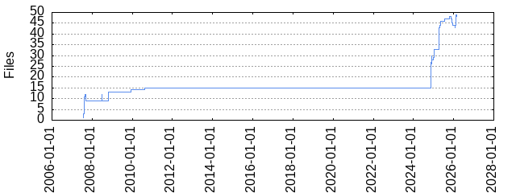

Note: Files with excluded extensions are not shown. Configure exclude_exts in gitstats.conf.
| Extension | Files (%) | Lines (%) | Lines/file |
|---|---|---|---|
| conf | 1 (2.04%) | 83 (0.89%) | 83 |
| css | 1 (2.04%) | 510 (5.46%) | 510 |
| gif | 3 (6.12%) | 0 (0.00%) | 0 |
| js | 1 (2.04%) | 324 (3.47%) | 324 |
| json | 1 (2.04%) | 19 (0.20%) | 19 |
| lock | 1 (2.04%) | 2284 (24.45%) | 2284 |
| md | 3 (6.12%) | 319 (3.41%) | 106 |
| png | 1 (2.04%) | 0 (0.00%) | 0 |
| py | 8 (16.33%) | 3474 (37.19%) | 434 |
| rst | 11 (22.45%) | 853 (9.13%) | 77 |
| toml | 1 (2.04%) | 71 (0.76%) | 71 |
| yaml | 2 (4.08%) | 63 (0.67%) | 31 |
| yml | 9 (18.37%) | 300 (3.21%) | 33 |